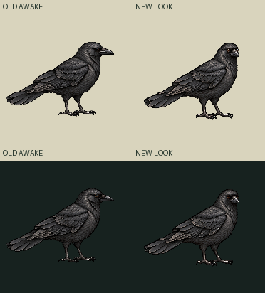
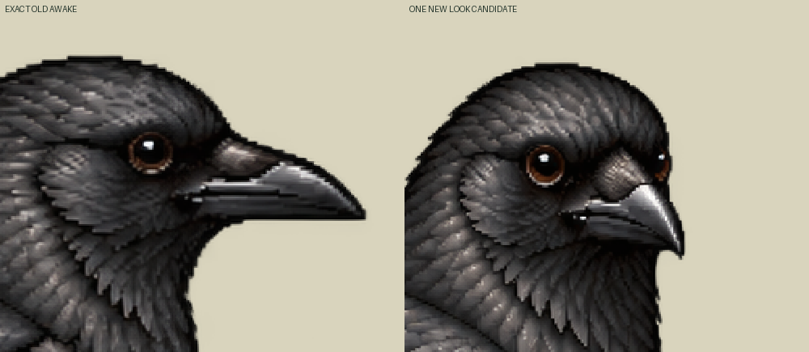
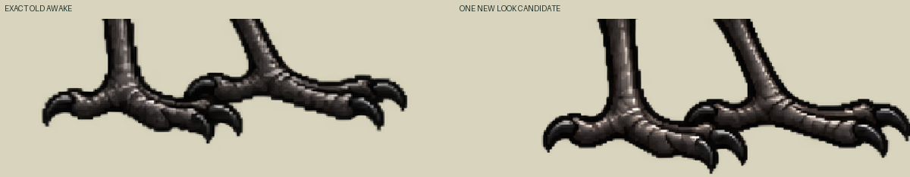

Source candidate awaiting a provisional-versus-held decision. One actual new drawing; zero new neutral/blink. The native edit changes the skull/bill direction and also redraws body, tail and toes. Compare the movement at normal yard size before deciding usefulness.
Normal canvas185.88535031847132 CSS/world units, old bird152world wide. Existing density157/152, pivot111,150 and foot pixels99,146 +124,144 are retained. Native1254canvas is mapped directly to192 by nearest sampling. No body-envelope fit, painting, translation or foot snap. Global lowest alpha row changes4outputpx; paired foot-ROI proxy baseline changes at most6outputpx, centroid4.616world. Positive-alpha markers do not certify sole support.
One-shot30Hz: awake30ticks → turned12ticks → exact awake30ticks. Two distinct poses only; no generated head-turn intermediates, measured yaw or smooth-turn approval. Idle contains only original awake. The requested25–35° yaw is art direction.



Loading exact two-frame atlas…
Own explicit look source proposal only: unreviewed, activation none, runtime packet binding false, canonical Zod/Sharp NOT_RUN, current Mac named-look contract UNKNOWN. Existing Crow neutral/blink files remain untouched. No physical/contact or runtime admission follows from these image checks.